A Mizo márkanév vége és a "kávézó" szó közepe ugyanaz a hang: ZÓ. Ez a kampány születési pillanata.
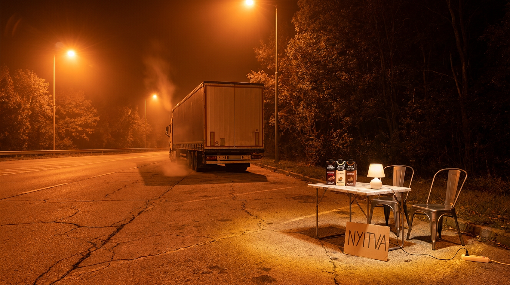
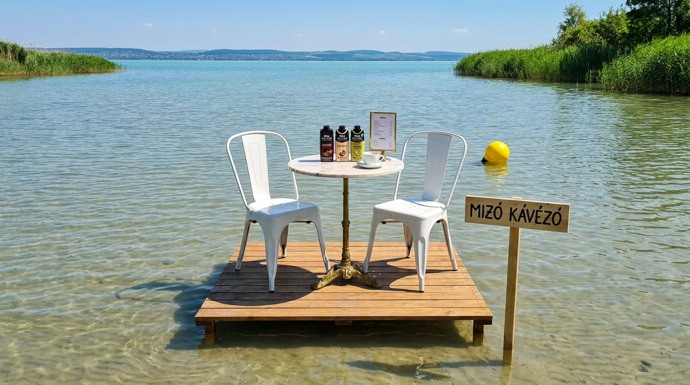
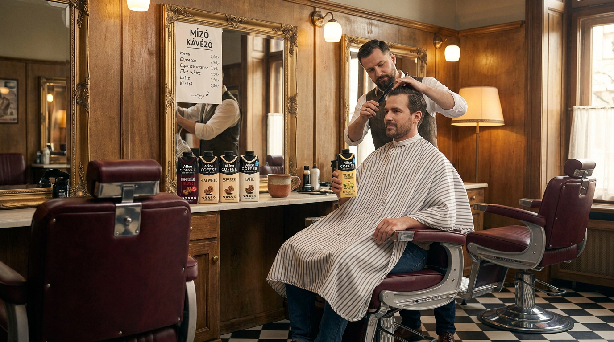
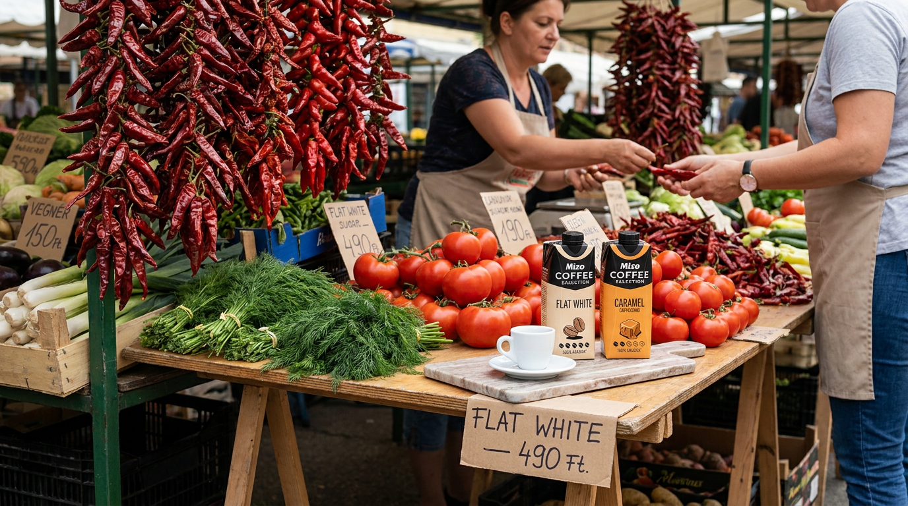
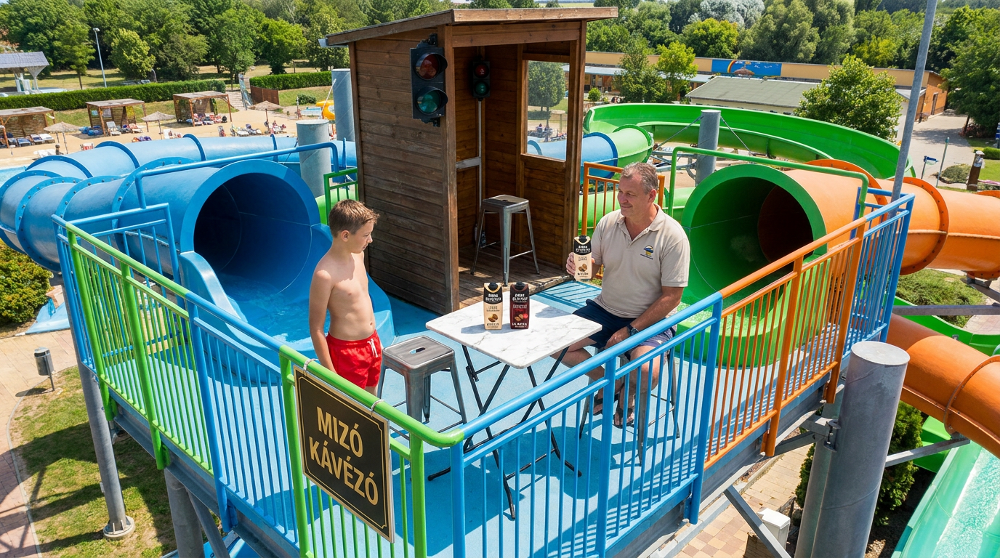
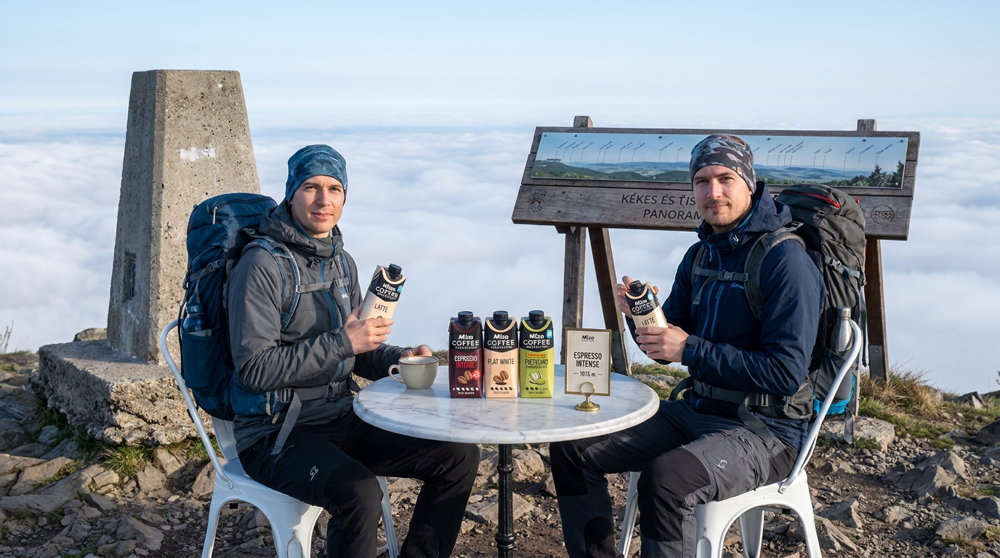
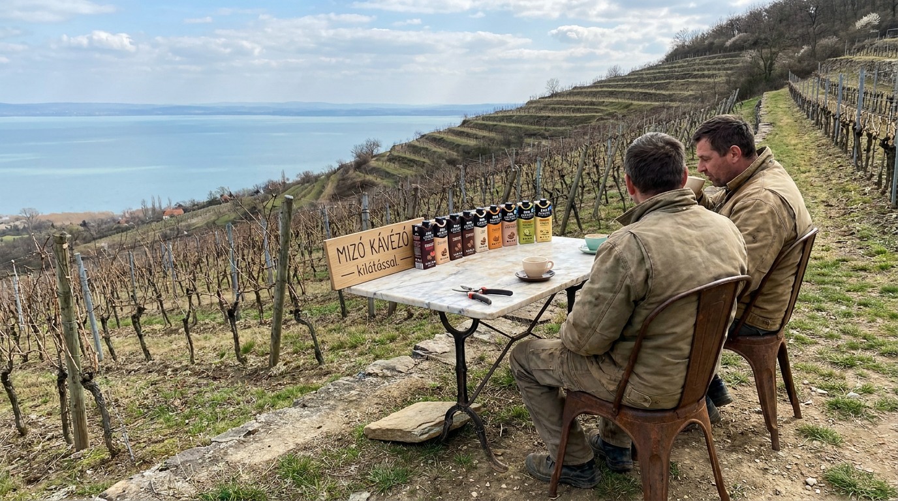
A NeedScope-modell szerint az MCS a tej-zónában ül — gondoskodó, megbízható, tradicionális —, miközben a kategória elvárásai: dinamizmus, fiatalosság, energikuspág. A Hell pontosan a kategória közepén helyezkedik el, az MCS ezzel szemben.
A brand tracking szerint a fiatalosság-indikátoron 27 pontos rés van a Hell javára (+24 vs −3). És: 39–39%-os döntetlen áll fenn brand power szintjén — mégis a Hell nyeri a polcot. Ez nem awareness-probléma. Ez purchase trigger-probléma: az MCS benne van a consideration set-ben, de a végsoő döntésnél valami nem billen át.
A tej-zóna problémát nem azzal kezeli, hogy elhagyja a Mizo örökségét, hanem egy új entitáson — a kávézón — keresztül fejezi ki: a Mizo tej és a 100% Arabica nem tejtermék-attribútum többé, hanem egy kávézó alapanyaga. A fiatalosság-rést a Felfedező archetype irányába mozdulással zárja: az „ajtó kinyílik” motívum aktív, kíváncsi cselekvés.
A purchase trigger-problémát a visszazárható kupak rituáléba emelésével oldja meg: a doboznyitás nem termékhasztálat, hanem a kávézó megnyitása — ezt a Hell alumínídobóza nem tudja reprodukálni.
Not defined by demographics but by mindset. Hectic, busy life — on-the-go, no time for real coffee. Choice and flavors are key: switching with no real loyalty, different types for different moments (self vs friends, energy & indulgence). New flavors always exciting. For the Urban Explorer, ice coffee is more than coffee: pleasure, sweet dessert, rewarding — a statement of style & self.
"cukros lotty, amit lehet iszogatni, kortyolgatni" — this is exactly the reclosable cap ritual. Not a single-use moment: open it, close it, come back. The Mizó Kávézó stays open.
A kávézói élmény eddig egy helyhez kötött. A Mizó Kávézó ezt feloldja.
Minden foglalónak egyedi vizuális pillanat. Amit régen CGI-stúdió kellett — ma egy sprint.
100% Arabica + 100% Mizo tej. Kettő igazi. Egy kávézó.
Az MCS eddig terméket kommunikált. A relaunch-tól kezdve helyet kommunikál. A versenytársak kávét árulnak. Az MCS élményt ad — és az élménynek neve van: Mizó Kávézó.
AI-generált vizuális identitás. Cél: a fogyasztó megismerje a Mizó Kávézót — mint fogalmat, mint helyet.
"Foglalj asztalt" mechanic aktiválása. UGC naturálisan nő ebben a fázisban.
A Mizó Kávézó elmegy a boltba. Digitális és fizikai találkozik a kasszánál.
„Bárhol, bármikor” = elérhetőségi állítás — logisztika. „Mizó Kávézó” = emocionális keret: bárhol leülhetsz egy kávézóra. Ez élmény, nem kényelmi állítás.
A Hell soha nem mondhatja hitelesen, hogy kávézói élményt ad — az ő DNA-ja energiaital. Az MCS mögött ott van a 100% Arabica, a Mizo tej, az eredeti RTD pozíció. A kávézó-asszociáció az MCS-nek természetes, a Hellnek erőltetett lenne.
A kampány motorja: a kávézói pillanat egyszerre vágyott és elérhetetlen. Sorban állni nincs idő. Beülni drága. A Mizó Kávézó erre válaszol — és mert AI-alapú, minden válasza egyéni.
A kategória általánosan helyszín-katalógusban gondolkodik: strand, iroda, reggeli busz. A brand igazodik az alkalomhoz — követi a fogyasztót. A Mizó Kávézó megfordítja: a fogyasztó nyitja meg a brandet. A cselekvés iránya megfordul.
A visszazárható kupak az egyetlen funkcionális elem, amit a Hell tin can nem tud lemásolni. A fogyasztó nem azt meséli, hogy „bárhol ihat Mizót” — azt meséli, hogy kinyitotta és megnyílt a kávézó.
„cukros lotty, amit lehet iszogatni, kortyolgatni” — Urban Explorer kutatási összefoglaló
Ez pontosan az a fogyasztói viselkedési minta, amire a Mizó Kávézó rá van építve: kinyitja, visszazárja, visszateszi a táskájába, és újra kinyitja. A kupak nem kényelmi extra — a kategóriával kompatibilis életmód egyetlen fizikai bizonyítéka. Ez az ügyfél saját Discriminator-blokkjában is szerepelt — nem az ügynökség találta fel, csak kreatív fordítást adott neki.
Generált kép → social share → QR → új foglalás. 10.000 kártya felénél 3-4 ismerő látja: 150K+ organikus elérés, nulla médiaköltés.
10-15 micro-influencer egyszerre, AR-filterrel. Kérdés: "Hol nyílt ki a te Mizó Kávézód?"
Évente egyszer, 50–100 nm-es branded tér Budapesten. AI-világ a fizikai térben. Ingyenes kóstoltatás, AR-installáció.
AI-generált vizuális persona ("Noémi") — heti szólam a brand IG-n. Emberi arc influencer-szerződés nélkül. Transzparensen AI.
Reggeli podcastokban: "A mai epizódot a Mizó Kávézó kísér — nyitva van, amíg hallgatod." A rímet a fül rögzíti.
Minden POS elemen visszatér a signature bútor-set: a Tolix szék kontúrja, márvány asztallap, "FENNTARTVA" réz tábla, fekete esernyő. A promptok in-situ lifestyle mockupok — a kész POS-t a valódi helyszínen mutatják be.
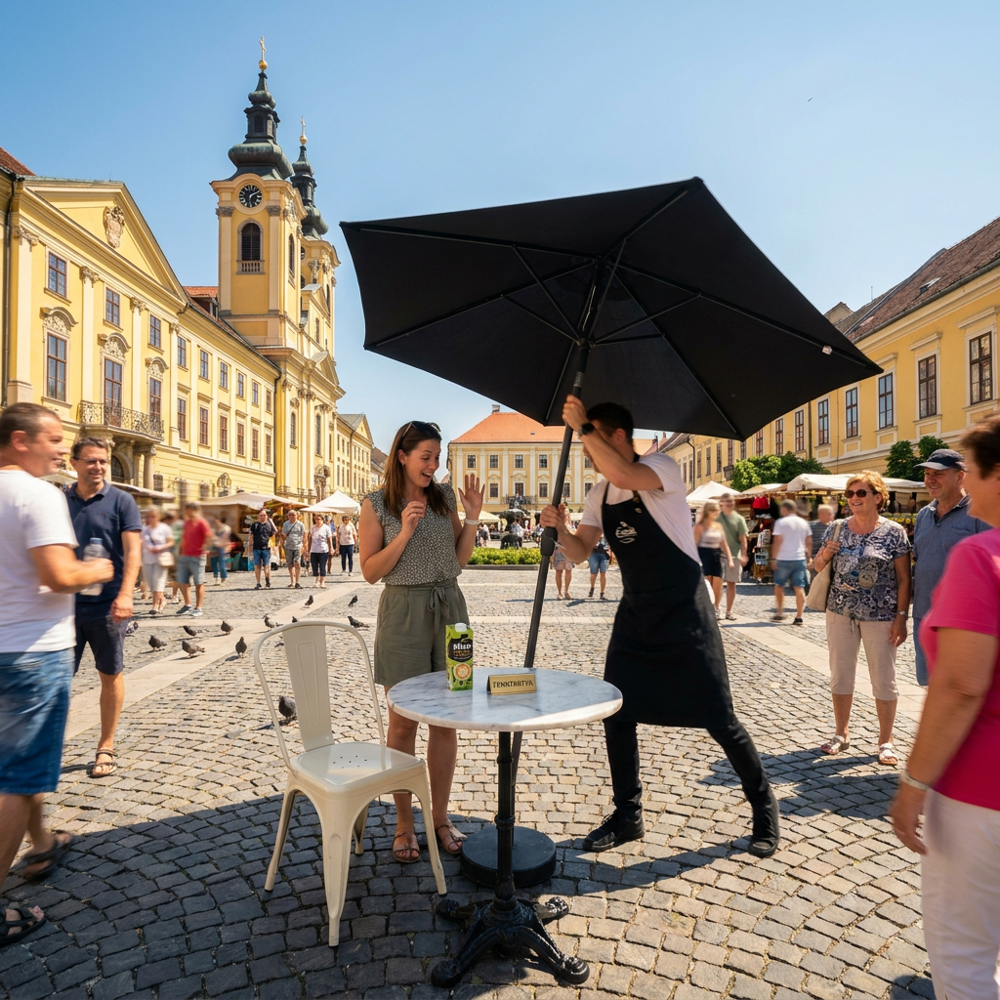
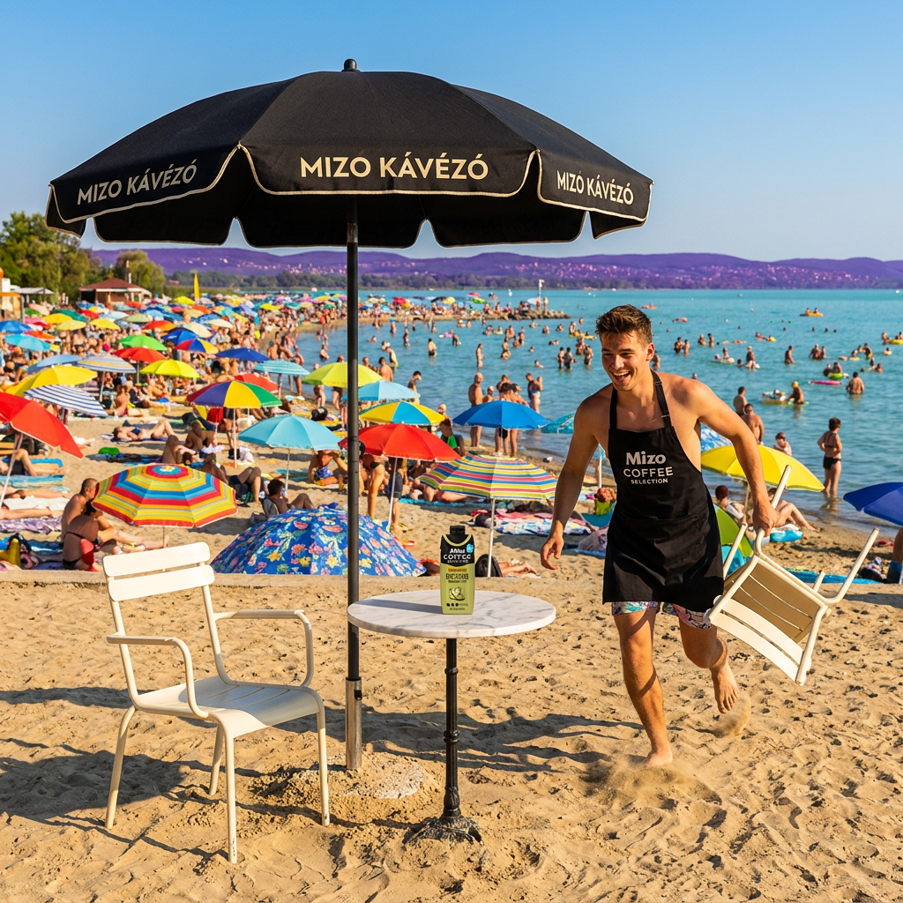
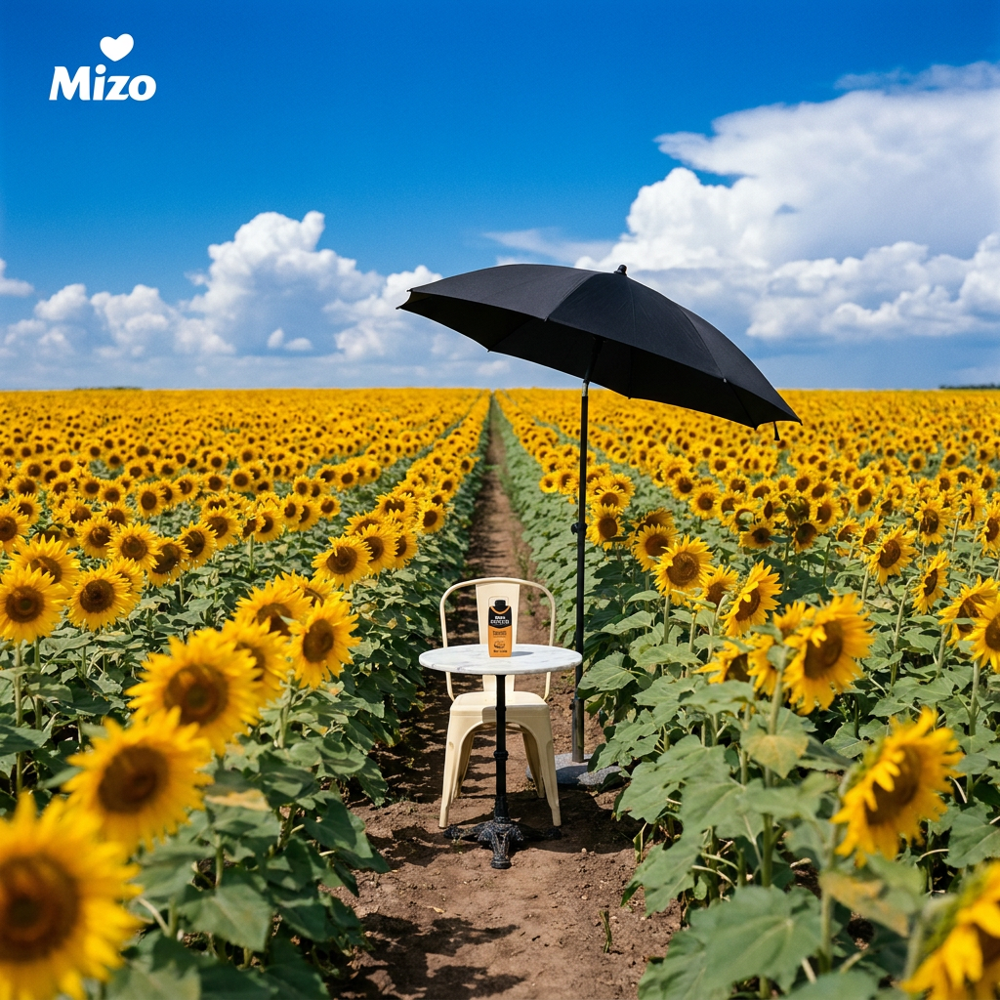
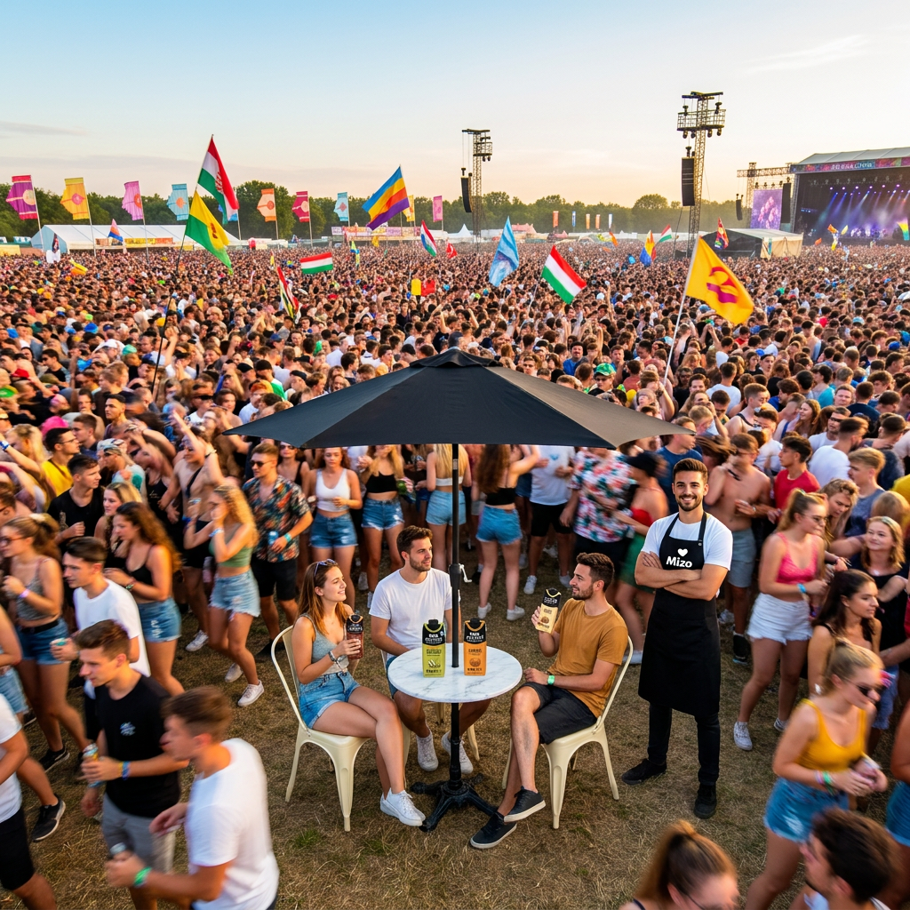
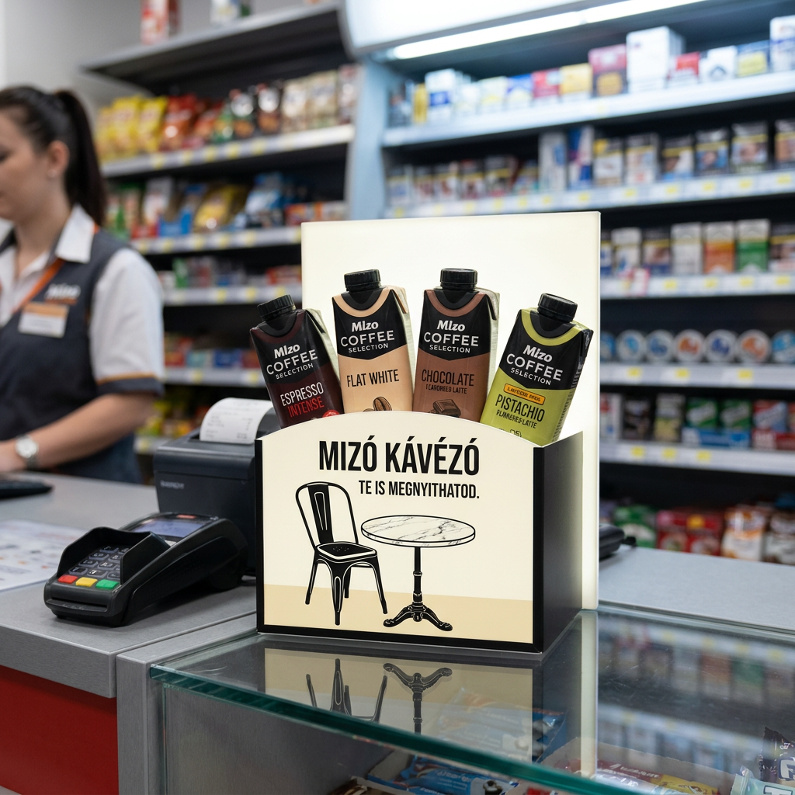
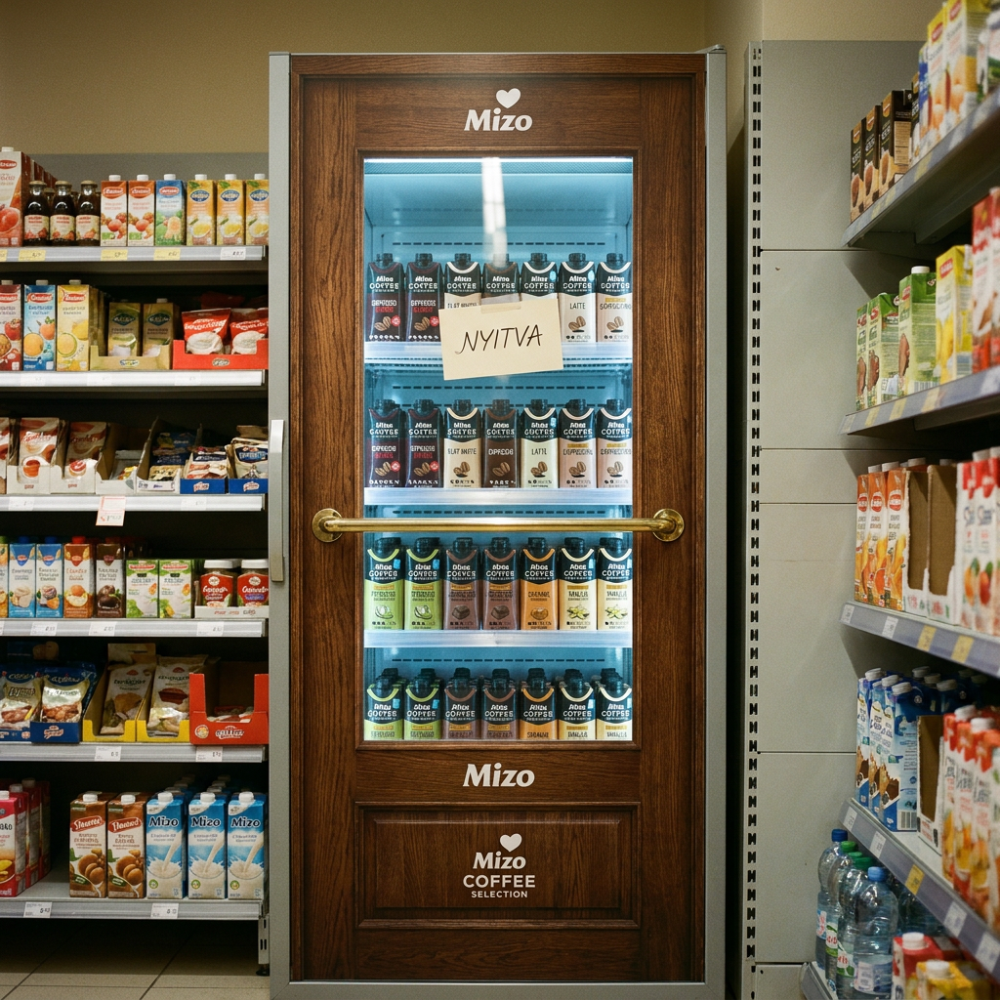
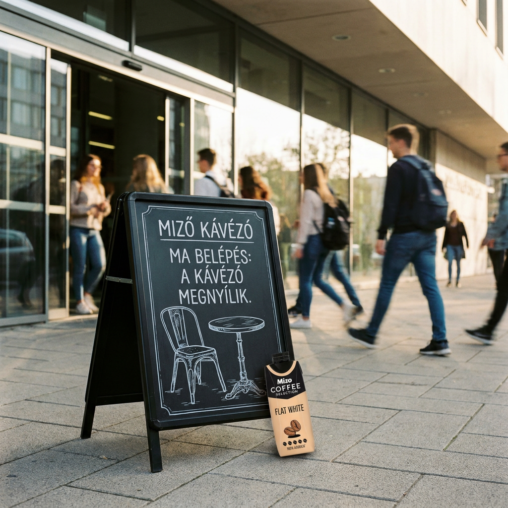
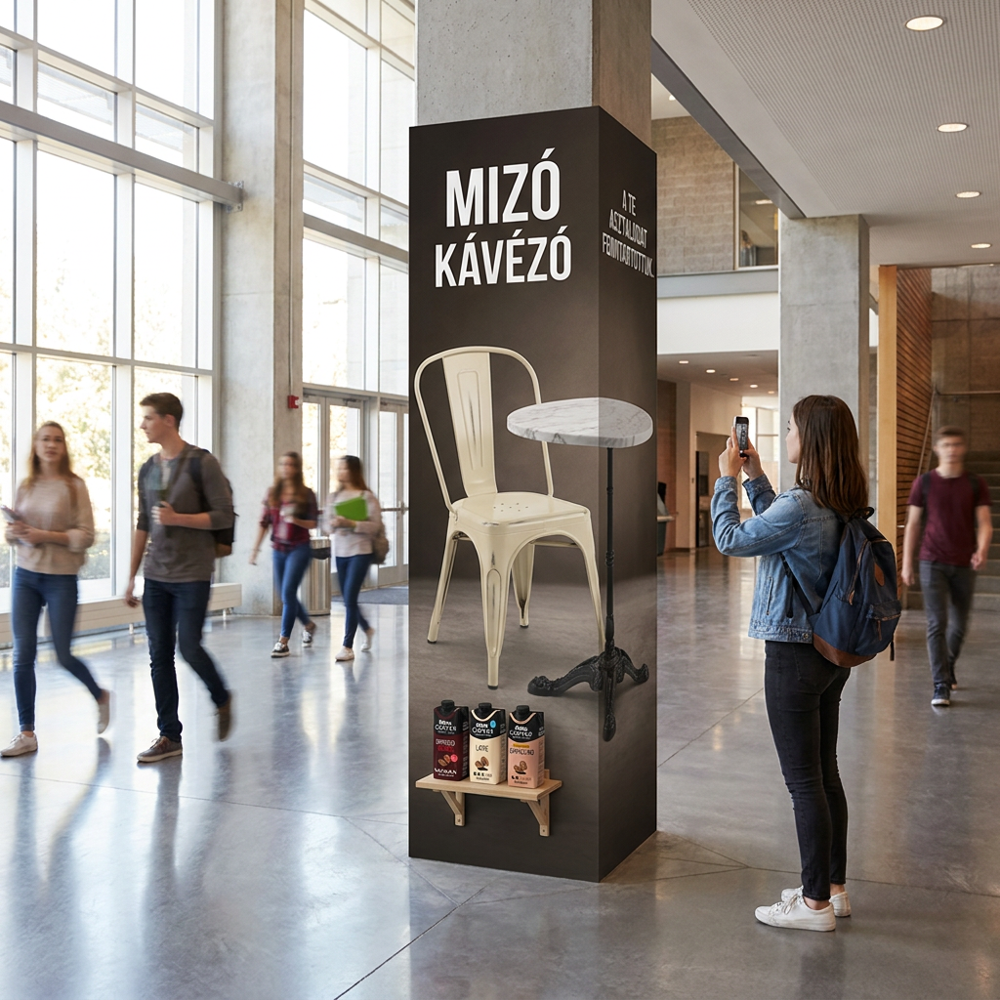
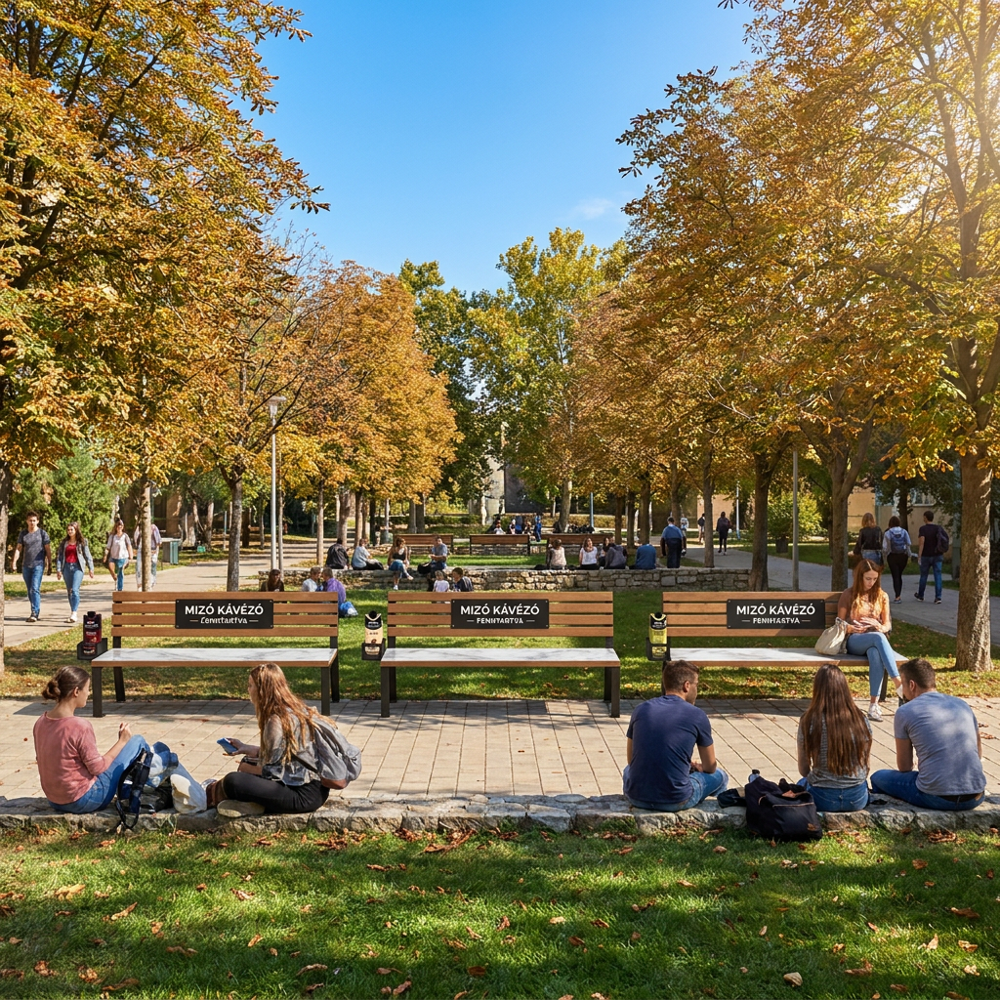
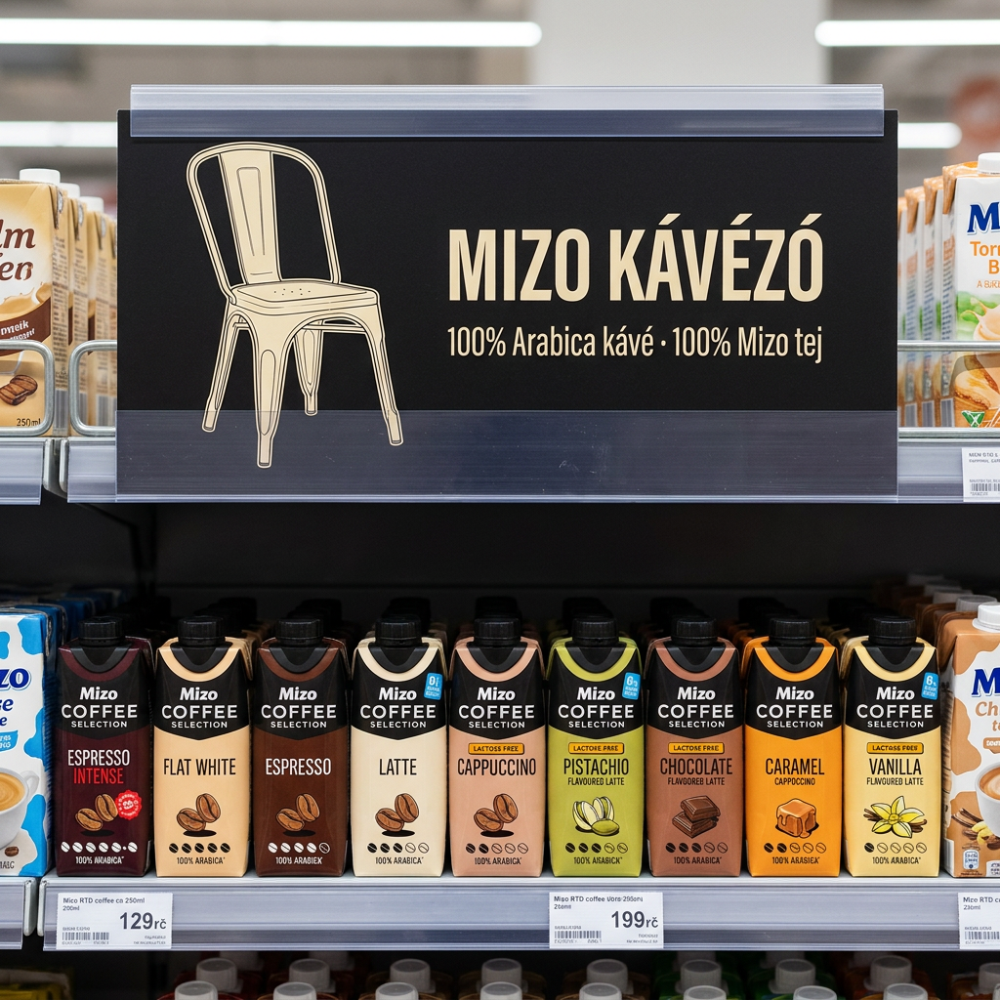